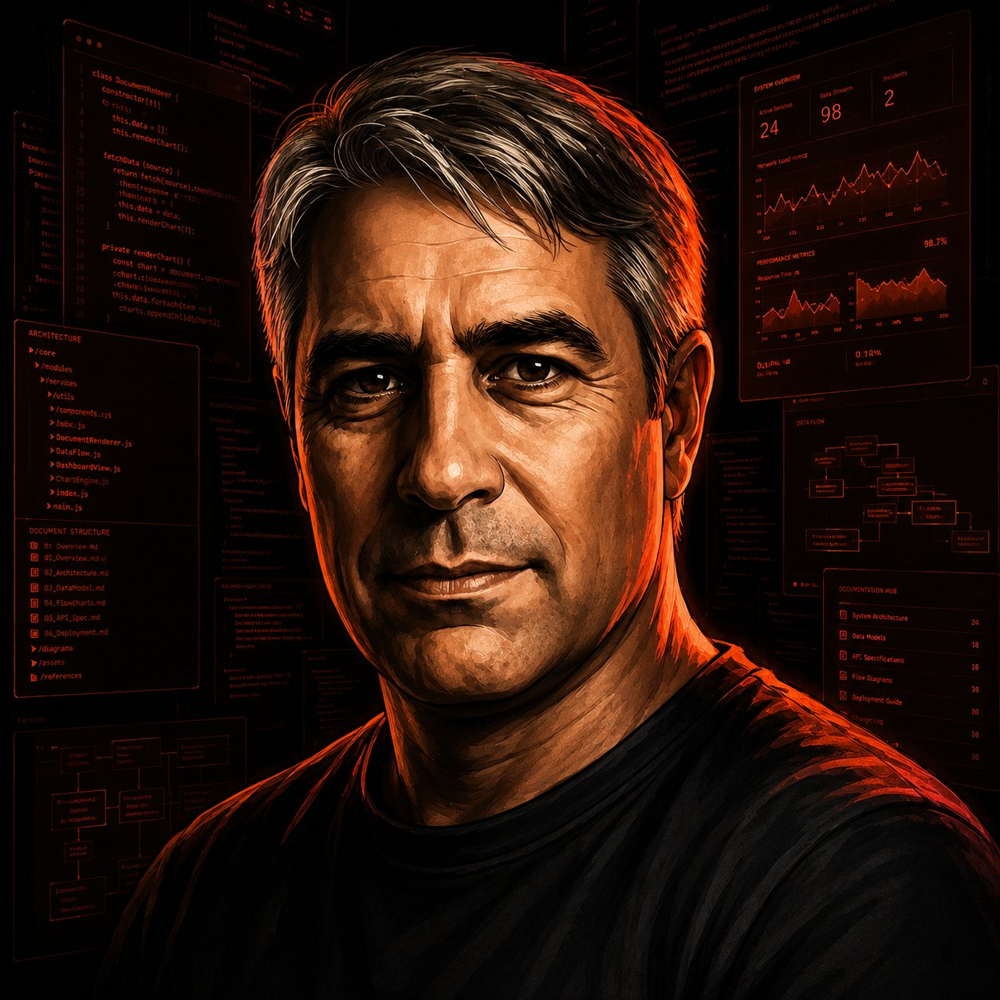
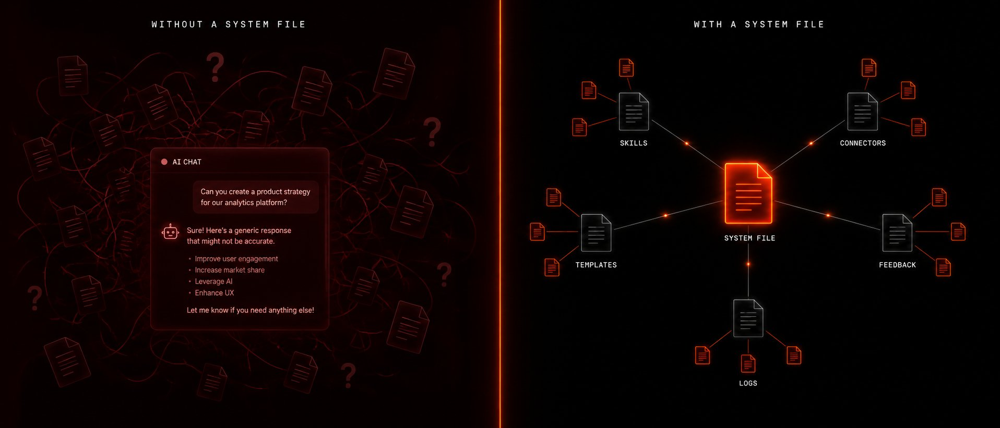
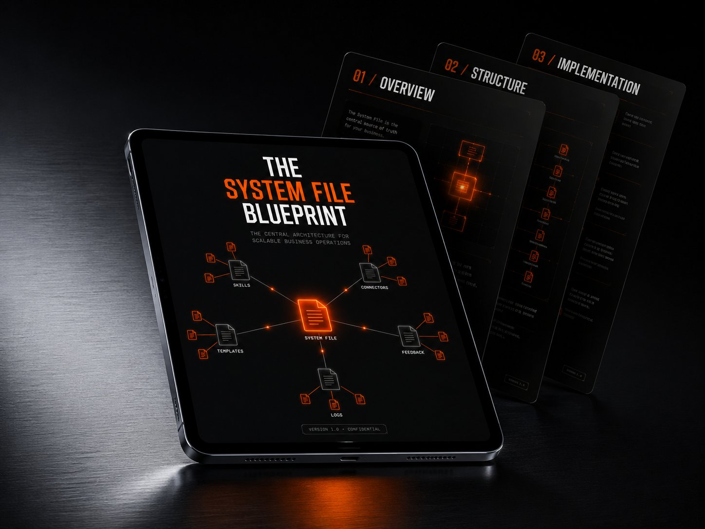
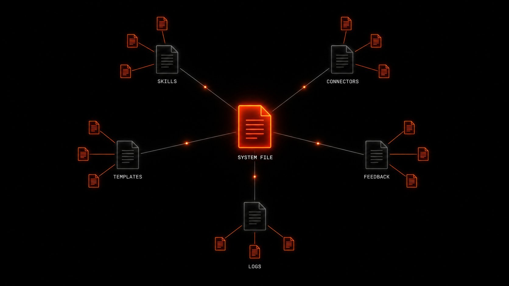
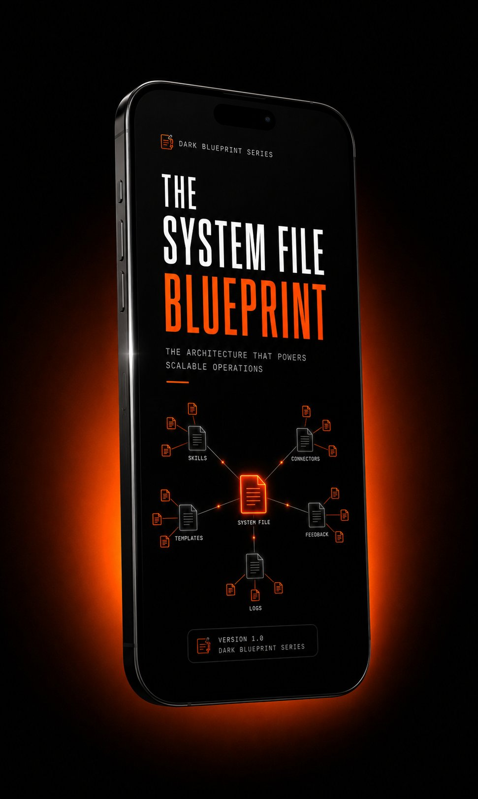

Every conversation starts from scratch. No memory of your pricing, your clients, your voice. This fixes that. One document. 30 minutes. Claude finally works the way you think.
Built by someone running 3 real businesses on this exact system — not a course creator.
No spam. No credit card. PDF delivered to your inbox immediately.

Every time you open Claude, you start over. You paste in context. You re-explain your offer. You remind it how you sound. You clean up outputs that almost-but-not-quite match your business. Then you do it again tomorrow.
That's not a Claude problem. That's an architecture problem. You're treating the most capable business tool ever built like a search bar — and wondering why the results feel generic.
The System File is the fix. It's the single document that teaches Claude your business once — so every conversation starts from your reality, not from zero.
One document. One afternoon. Every output after that sounds like you wrote it — because the system already knows your business.

Not a blog post. Not a prompt list. A structured build guide with templates, real examples, and a checklist for every section — so you can't get it wrong.

I'm Cody Keegan. I run Celebrate in 360 — 250+ corporate activations delivered in Southern Arizona. I built this framework because I had real proposals to write, real clients to onboard, and real operations to run. I needed Claude to work without re-explaining everything every time.
So I built a System File. Then a Skills library. Then Connectors. Then Templates. Then a Feedback loop. Now I run three businesses on 54 interconnected files — and the whole system operates whether I'm at my desk or on a different continent.
The framework is free and open. I document how it's built at codykeegan.ai as I go. The implementation — installing it inside your specific business — is the work I do with operators directly.
You write the same types of proposals, follow-ups, and onboarding emails every week. A System File means Claude already knows your offers, your voice, and your client types before you ask it to do anything.
Multiple clients, multiple voices, multiple workflows. The System File gives Claude persistent context for each one — so outputs match the client, not a generic template.
Estimates, follow-up sequences, client communication, project documentation. If your operations follow a pattern, the System File turns that pattern into infrastructure Claude can run.
Product descriptions, email campaigns, customer service, inventory communications. The System File keeps every output on-brand and on-price without you checking every line.
Compliance-sensitive industries where AI outputs need guardrails. The Boundaries section of the System File tells Claude exactly what it should never assume, fabricate, or promise.
You do not have a full operations team. The System File is the start of building one inside Claude — proposals, outreach, reporting, and follow-ups that run on rails instead of memory.
The blueprint is 13 pages. It takes 30 minutes. It's free. There is no reason to still be using AI that starts from zero every single time.
No spam. PDF in your inbox immediately.
54 interconnected files across 5 layers. The System File is the foundation everything else reads from. This is where the free guide ends — and the full build begins.

The framework is industry-agnostic. Here's one example of it applied to a specific vertical:
Photo booth and event activation operators using this framework for proposals, client onboarding, follow-up sequences, and post-event reporting — without a team or a developer. Same architecture. Different configuration.
One document. Thirty minutes. Claude stops being a search bar and starts running like your business actually operates. Free. In your inbox before you finish your next cup of coffee.
Get the System File Blueprint — Free →Free. No credit card. Delivered to your inbox immediately.
